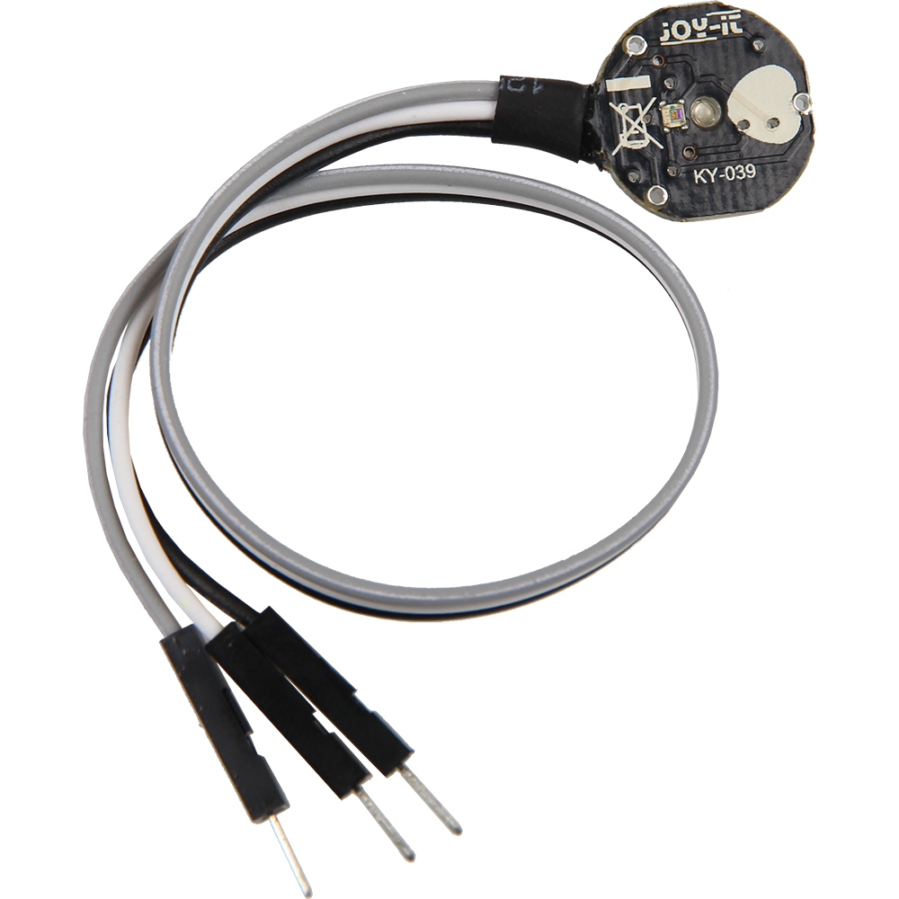
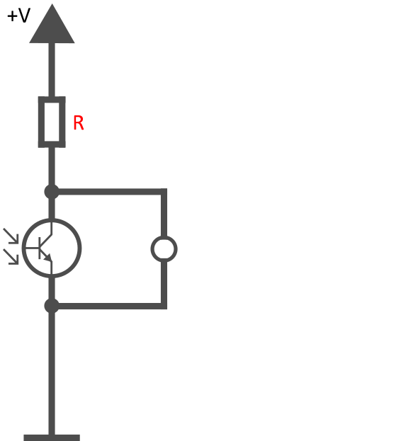
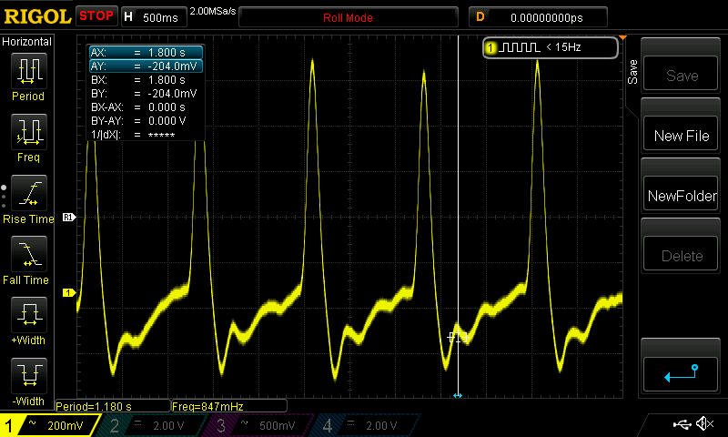
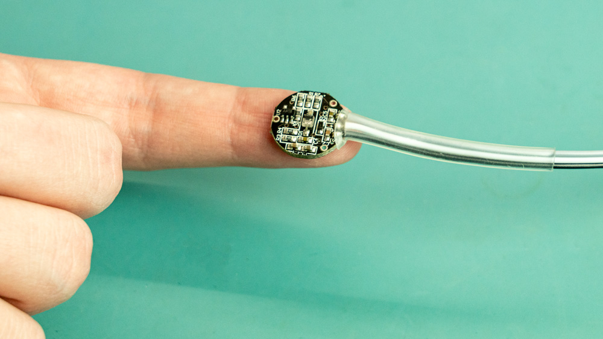
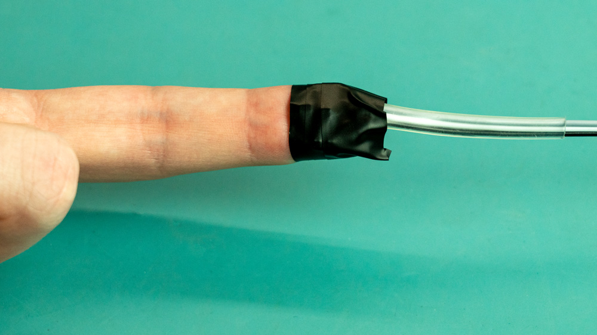
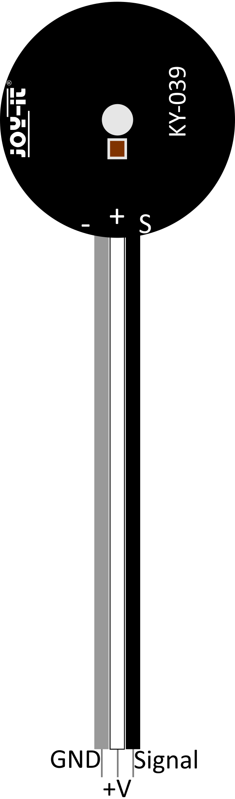
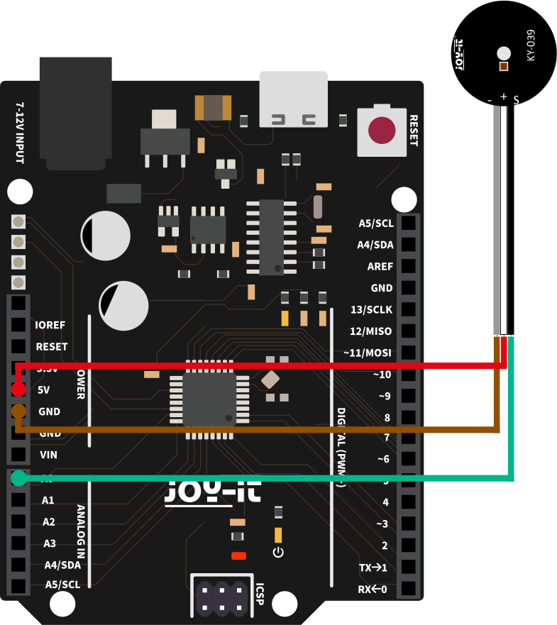

Türchen 21 · Montag, 21. Dezember 2026
Herzklopfen vor der Bescherung
Bald ist Bescherung, und das Herz klopft schneller. Der Herzschlagsensor misst, wie aufgeregt wir sind.
Heute im Säckchen
KY-039 Herzschlagsensor
Wird ein Finger zwischen der Infrarot-Leuchtdiode und dem Foto-Transistor gehalten, so kann am Signalausgang der Puls detektiert werden.

Der Herzschlagsensor detektiert den Puls, wenn ein Finger zwischen die Infrarot-Leuchtdiode und den Foto-Transistor gehalten wird. Am Signalausgang kann der Puls dann abgelesen werden.
Die Funktionsweise eines Fototransistors ist wie folgt: Ein Fototransistor funktioniert ähnlich wie ein normaler Transistor, bei dem ein höherer Strom durch ihn fließt, je höher die an ihn angelegte Steuerspannung ist. Bei einem Fototransistor stellt jedoch das einfallende Licht die Steuerspannung dar. Das bedeutet, je mehr Licht auf den Fototransistor trifft, desto mehr Strom lässt er durch. In diesem Sensor wird die Veränderung der Lichtmenge, die durch den Blutfluss im Finger verursacht wird, vom Fototransistor erfasst und in ein Signal umgewandelt, das zur Pulsdetektion verwendet werden kann.
Dieser Sensor ist ideal für Projekte, bei denen die Herzfrequenzüberwachung erforderlich ist, wie z.B. in Fitness-Tracker, Gesundheitsüberwachungssystemen oder anderen biometrischen Anwendungen.

Schaltet man vor dem Transistor einen Widerstand in Reihe, so ergibt sich folgendes Verhalten, wenn man die Spannung über den Transistor misst: Scheint auf den Transistor viel Licht bzw. ist es außen hell, so kann man eine niedrige Spannung nahe 0V gemessen - ist der Transistor im Dunklen, so lässt dieser einen relativ kleinen Strom durch und man misst eine Spannung nahe +V.
Der bei diesem Sensormodul aufgebaute Messaufbau mit Infrarotdiode und Fototransistor ermöglicht uns nun den Puls zu messen, indem ein Finger zwischen Diode und Transistor gelegt wird. Erklärung: genauso wie man es von der Taschenlampe kennt, kann die Haut an der Hand durchleuchtet werden. Trifft man beim Durchleuchten auf eine Blutader, so kann man ganz schwach das Pumpen des Blutes erkennen. Dieses Pumpen erkennt man, da das Blut an unterschiedlichen Stellen in der Ader eine andere Dichte besitzt und somit Helligkeitsunterschiede beim Blutfluss erkennbar sind. Genau diese Unterschiede in der Helligkeit kann man mit dem Sensormodul aufnehmen und somit den Puls erkennen. Deutlich wird dieses beim Betrachten des folgenden Oszilloskop-Bildes.

Dieses zeigt auf der Y-Achse die Veränderung der Spannung am Fototransistor - somit die Helligkeitsveränderungen hervorgerufen durch das fließende Blut. Die oben gekennzeichneten Spitzen ergeben somit das Schlagen vom Herz. Rechnet man nun die registrierten Schläge pro aufgenommene Zeit, so kommt man auf einen Puls von ca. 51 Schläge/Minute (bpm)
Wie man auf dem oberen Oszilloskop-Bild zudem sehen kann, ist das aufgenommene Signal relativ klein bzw. der Transistor sehr empfindlich, um das schwache Signal aufnehmen zu können. Um ein optimales Ergebnis zu erhalten, empfehlen wir das Modul zum Messen so vorzubereiten, wie in den folgenden Bildern gezeigt:

Um die Empfindlichkeit des Sensors zu erhöhen, empfehlen wir den Sensor mittels eines Pflasters / Klebebandes / Isolierbandes an der Fingerkuppe des kleinen Fingers zu fixieren.

Der Herzschlag wird besonders gut aufgezeichnet/registriert, wenn sich der Sensor über einem größeren Blutgefäß befindet - um das Signal zu verbessern, empfehlen wir zudem die Position des Sensors gegeben falls auf der Fingerkuppe zu verändern.
Pin-Belegung

| Kabelfarbe | Kabelbedeutung |
|---|---|
| Schwarz | Signal |
| Weiß | +V |
| Grau | GND |

| Arduino | Sensor |
|---|---|
| Pin A0 | Signal |
| 5V | +V |
| GND | GND |
Weihnachtsidee zum Bauteil
Weihnachtsidee: Der Aufregungsmesser
Je näher die Bescherung rückt, desto schneller klopft das Herz. Der Herzschlagsensor misst den Puls am Finger und übersetzt ihn in eine Aufregungsstufe, von „ganz entspannt“ bis „gleich platzt das Geschenkpapier“. Die LED an Pin 13 blinkt im Takt.
Verdrahtung
Wie im Abschnitt zum Bauteil oben: Signal an A0, +V an 5V, GND an GND.
Ablauf
Die Pulserkennung ist dieselbe wie im Artikel. Am zuverlässigsten misst der Sensor im abgedunkelten Raum mit ruhig aufgelegtem Finger. Das ist ein Bastelprojekt und kein medizinisches Messgerät.
Deine Knobelaufgabe
Im Sketch fehlt der Inhalt der loop()-Funktion. Die Kommentare darin verraten dir, was passieren soll – programmiere es selbst! Die Auflösung findest du morgen ganz unten auf der Seite von Türchen 22.
// Türchen 21: Der Aufregungsmesser
// Verdrahtung wie im Artikel KY-039 (Signal an A0)
const char ART[] PROGMEM = R"ART(
***** *****
********* *********
*******************
*****************
*************
*********
*****
*
Tuerchen 21: Der Aufregungsmesser
)ART";
const int ledPin = 13;
const int analogPin = 0;
const int delayMsec = 60;
// Spitzenerkennung wie im Artikel: Ein Herzschlag ist der Beginn eines neuen Maximums
bool heartbeatDetected(int pin, int delay) {
static int maxValue = 0;
static bool isPeak = false;
bool result = false;
int rawValue = analogRead(pin);
rawValue *= (1000 / delay);
// Grundlinie zurücksetzen, wenn der Finger entfernt wurde
if (rawValue * 4L < maxValue) {
maxValue = rawValue * 0.8;
}
if (rawValue > maxValue - (1000 / delay)) {
if (rawValue > maxValue) {
maxValue = rawValue;
}
if (!isPeak) {
result = true;
}
isPeak = true;
} else if (rawValue < maxValue - (3000 / delay)) {
isPeak = false;
maxValue -= (1000 / delay);
}
return result;
}
const char* aufregung(int bpm) {
if (bpm < 70) return "Ganz entspannt, wie nach dem Festessen.";
if (bpm < 90) return "Leichte Vorfreude liegt in der Luft.";
if (bpm < 110) return "Bescherungsfieber! Ist das Glöckchen schon zu hören?";
return "Gleich platzt das Geschenkpapier vor Aufregung!";
}
void setup() {
pinMode(ledPin, OUTPUT);
Serial.begin(9600);
Serial.println((const __FlashStringHelper*)ART);
Serial.println("Finger ruhig auf den Sensor legen und nicht wackeln.");
}
void loop() {
// Die Zeit zwischen zwei Schlägen von heartbeatDetected() messen, daraus den Puls
// berechnen und mit aufregung() kommentieren. Die LED blinkt bei jedem Schlag.
}Das Grundlagen-Beispiel
KY-039 Herzschlagsensor
Code-Beispiel
Um das folgende Codebeispiel auf deinen Arduino zu laden, empfehlen wir die Verwendung der Arduino IDE. In der IDE kannst du den passenden Port und das richtige Board für dein Gerät auswählen.
Kopiere den unten stehenden Code in deine IDE. Um den Code auf deinen Arduino hochzuladen, klicke einfach auf den Upload-Button.
////////////////////////////////////////////////////////////////////////
/// Copyright (c)2015 Dan Truong
/// Permission is granted to use this software under the MIT
/// licence, with my name and copyright kept in source code
/// http://http://opensource.org/licenses/MIT
///
/// KY039 Arduino Heartrate Monitor V1.0 (April 02, 2015)
////////////////////////////////////////////////////////////////////////
////////////////////////////////////////////////////////////////////////
/// @param[in] IRSensorPin Analog PI an welchen der Sensor angeschlossen ist
/// @param[in] delay (msec) Die Verzoegerung zwischen den Aufrufen der Abtastfunktion.
// Die besten Ergebnisse erhaelt man, wenn man 5 mal Pro Herzschlag abtastet.
/// Nicht langsamer als 150mSec für z.B. 70 BPM Puls
/// Besser waere 60 mSec für z.B. bis zu einen Puls von 200 BPM.
///
/// @Kurzbeschreibung
/// Dieser Code stellt eine sog. Peak-Detection dar.
/// Es wird kein Herzschlagverlauf aufgezeichnet, sondern es
/// wird innerhalb der aufgezeichneten Daten nach "Peaks" (Spitzen) gesucht,
/// und per LED angezeigt. Mittels der bekannten Delay Abstaende, kann somit
/// grob der Puls errechnet werden.
////////////////////////////////////////////////////////////////////////
int rawValue;
bool heartbeatDetected(int IRSensorPin, int delay) {
static int maxValue = 0;
static bool isPeak = false;
bool result = false;
rawValue = analogRead(IRSensorPin);
// Hier wird der aktuelle Spannungswert am Fototransistor ausgelesen und in der rawValue-Variable zwischengespeichert
rawValue *= (1000/delay);
// Sollte der aktuelle Wert vom letzten maximalen Wert zu weit abweichen
// (z.B. da der Finger neu aufgesetzt oder weggenommen wurde)
// So wird der MaxValue resetiert, um eine neue Basis zu erhalten.
if (rawValue * 4L < maxValue) maxValue = rawValue * 0.8; // Neue Spitzenwerte erkennen
if (rawValue > maxValue - (1000/delay)) {
// Hier wird der eigentliche Peak detektiert. Sollte ein neuer RawValue groeßer sein
// als der letzte maximale Wert, so wird das als Spitze der aufgezeichnten Daten erkannt.
if (rawValue > maxValue) {
maxValue = rawValue;
}
// Zum erkannten Peak soll nur ein Herzschlag zugewiesen werden
if (isPeak == false) {
result = true;
}
isPeak = true;
}
else if (rawValue < maxValue - (3000/delay)) {
isPeak = false;
// Hierbei wird der maximale Wert bei jeden Durchlauf
// etwas wieder herabgesetzt. Dies hat den Grund, dass
// nicht nur der Wert sonst immer stabil bei jedem Schlag
// gleich oder kleiner werden wuerde, sondern auch,
// falls der Finger sich minimal bewegen sollte und somit
// das Signal generell schwaecher werden wuerde.
maxValue-=(1000/delay);
}
return result;
}
////////////////////////////////////////////////////////////////////////
// Arduino Hauptprogramm
////////////////////////////////////////////////////////////////////////
int ledPin=13;
int analogPin=0;
void setup() {
// Die eingebaute Arduino LED (Digital 13), wird hier zur Ausgabe genutzt
pinMode(ledPin,OUTPUT);
// Serielle Ausgabe Initialisierung
Serial.begin(9600);
Serial.println("KY-039 Herzschlagmessung");
}
const int delayMsec = 60; // 100msec pro Probe
// Das Hauptprogramm hat zwei Aufgaben:
// - Wird ein Herzschlag erkannt, so blinkt die LED kurz aufgesetzt
// - Der Puls wird errechnet und auf der serriellen Ausgabe ausgegeben.
void loop() {
static int beatMsec = 0;
int heartRateBPM = 0;
if (heartbeatDetected(analogPin, delayMsec)) {
heartRateBPM = 60000 / beatMsec;
// LED-Ausgabe bei Herzschlag
digitalWrite(ledPin,1);
// zu hohe oder zu niedrige Werte ausschließen
if (heartRateBPM > 30 && heartRateBPM < 200){
// Serielle Datenausgabe
Serial.print("Puls erkannt: ");
Serial.println(heartRateBPM);
}
beatMsec = 0;
}
else {
digitalWrite(ledPin,0);
}
delay(delayMsec);
beatMsec += delayMsec;
}Lösung für Tag 20 anzeigen
// Auflösung zu Türchen 20: Der geheime Klopf-Code
// Verdrahtung siehe tag-20.md
const char ART[] PROGMEM = R"ART(
___________
| _ _ |
| | | | | | klopf
| |_| |_| | klopf
| o | klopf-klopf
|___________| klopf
Tuerchen 20: Der geheime Klopf-Code
)ART";
const int KLOPF = 10; // KY-031, LOW beim Klopfen
const int BUZZER = 8; // KY-006 von Tag 6
const int LED_ROT = 9; // KY-016 von Tag 5
const int LED_GRUEN = 6;
const int LED_BLAU = 5;
const int MAX_KLOPFER = 12;
const unsigned long ENDE_MS = 1500; // so lange Stille beendet die Eingabe
const unsigned long ENTPRELL_MS = 100; // ein Klopfer prellt; so lange danach nicht neu zählen
const float TOLERANZ = 0.25;
// Geheimer Rhythmus „lang, lang, kurz, kurz“: die Abstände zwischen den fünf Klopfern,
// jeweils im Verhältnis zum längsten Abstand (= 1.0). So ist das Tempo egal.
const float CODE[] = {1.0, 1.0, 0.5, 0.5};
const int CODE_LAENGE = sizeof(CODE) / sizeof(CODE[0]);
unsigned long zeiten[MAX_KLOPFER];
void setzeFarbe(int r, int g, int b) {
analogWrite(LED_ROT, r);
analogWrite(LED_GRUEN, g);
analogWrite(LED_BLAU, b);
}
bool klopfer() {
return digitalRead(KLOPF) == LOW;
}
void setup() {
pinMode(KLOPF, INPUT_PULLUP);
pinMode(BUZZER, OUTPUT);
pinMode(LED_ROT, OUTPUT);
pinMode(LED_GRUEN, OUTPUT);
pinMode(LED_BLAU, OUTPUT);
Serial.begin(9600);
Serial.println((const __FlashStringHelper*)ART);
Serial.println("Nur wer den geheimen Rhythmus kennt, darf zum Geschenk ...");
}
void loop() {
if (!klopfer()) {
return;
}
// Klopfer aufzeichnen, bis ENDE_MS lang Ruhe ist
int anzahl = 0;
zeiten[anzahl++] = millis();
delay(ENTPRELL_MS);
setzeFarbe(40, 40, 40); // gedämpftes Licht: Ich höre zu
while (millis() - zeiten[anzahl - 1] < ENDE_MS && anzahl < MAX_KLOPFER) {
if (klopfer()) {
zeiten[anzahl++] = millis();
delay(ENTPRELL_MS);
}
}
// Vergleichen: richtige Anzahl und jeder Abstand im Verhältnis passend?
bool richtig = (anzahl - 1 == CODE_LAENGE);
if (richtig) {
unsigned long laengster = 0;
for (int i = 1; i < anzahl; i++) {
unsigned long abstand = zeiten[i] - zeiten[i - 1];
if (abstand > laengster) laengster = abstand;
}
for (int i = 1; i < anzahl; i++) {
float relativ = (zeiten[i] - zeiten[i - 1]) / (float)laengster;
if (fabs(relativ - CODE[i - 1]) > TOLERANZ) richtig = false;
}
}
Serial.print(anzahl);
Serial.print(" Klopfer: ");
if (richtig) {
Serial.println("Richtig! Herein, das Geschenk wartet.");
setzeFarbe(0, 255, 0);
const int fanfare[] = {392, 523, 659, 784};
for (int i = 0; i < 4; i++) {
tone(BUZZER, fanfare[i], 180);
delay(220);
}
delay(1500);
} else {
Serial.println("Falscher Rhythmus - der Wichtel lässt dich nicht rein.");
for (int i = 0; i < 3; i++) {
setzeFarbe(255, 0, 0);
delay(200);
setzeFarbe(0, 0, 0);
delay(200);
}
}
setzeFarbe(0, 0, 0);
}